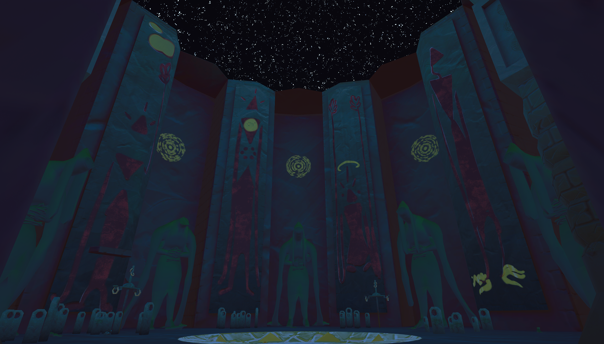

Multiplayer experience about elevating future players.

Polariis (2 People)
May 2025 - June 2025
Co-Producer and Programmer
Unity
KiBo is an experimental multiplayer experience that a friend and I worked on for the thatgamecompany x COREBLAXER GAME JAM 2025. This is still the largest jam I have taken part in and I am extremely happy with the results. KiBo was a learning experience in procedural animation, netcode, and time-management. I did all of the programming and created some VFX.
The main trailer.
Showcase of inverse kinematics.
Looking at another player's held item.
Caden and I had a bit less than a month to conceptualize and fully create KiBo, and the idea we set out to accomplish was one out of our comfort zone. Not being comfortable with multiplayer development, I pushed myself to learn how to use RPCs properly, how to set up a dedicated server, and how to avoid sending heaps of information over the network. We had some large issues during the last few days of development that was preventing the game from running over the network, but through thorough research and experimentation we pushed through and stabilized the project. This was also my introduction to the Animation Rigging package, which has been a staple when I need to create any sort of character that should react to the world they are in.
